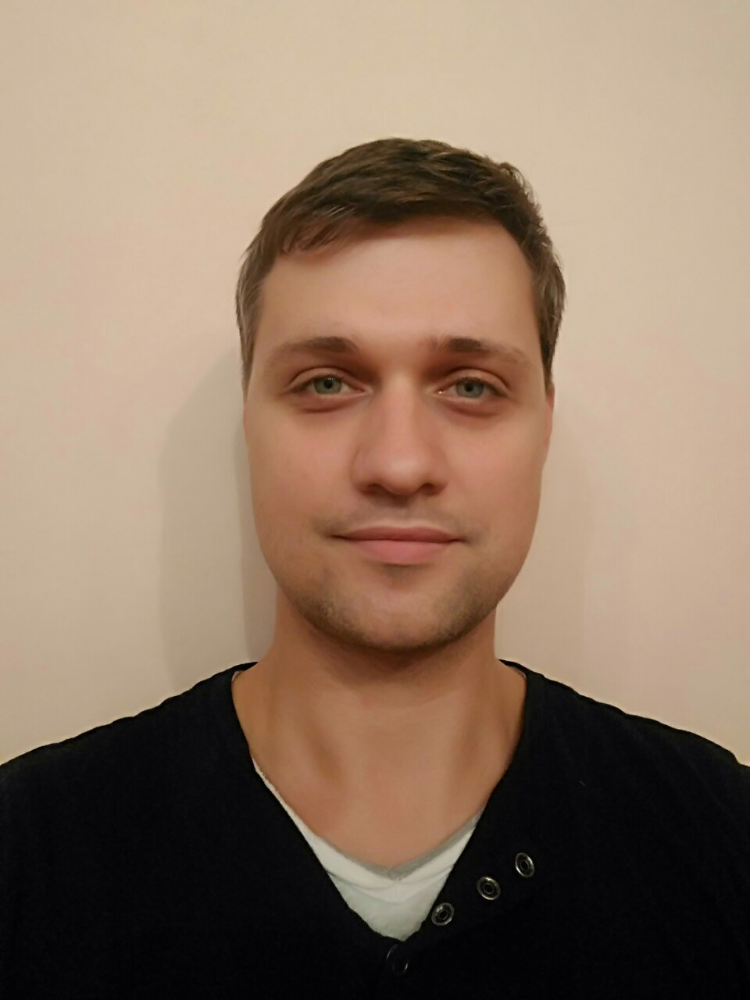

CURRICULUM VITAE  |
|---|
Anatolij DmitrukMTS mobile: +375 (29) 851 94 87;
e-mail addresses: anat_dr25@rambler.ru, anatolij.dmitruk@gmail.com I wish became a good programmer with big bag of experience, had in a big progressive company. Want to improve my knowledge of creating web pages and js language skills, working with git and ect. Skills: Basic JavaScript and C languages, basic HTML and CSS. Code examples:
Experience: I have no work experience in programming. English: Studied in Czech technical university in Prague. Studying by ERAZMUS program. Made course projects of metal arch and beam bridges, extended knowledge of metal and reinforced concrete constructions. Learned system of dynamics, acoustic and historical building diagnosis. Studding was in English. |